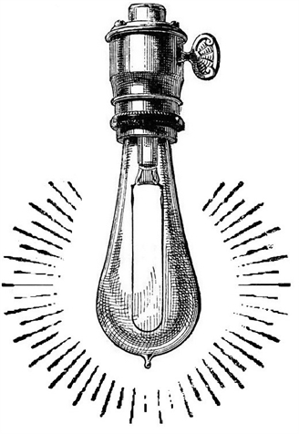

CREATIVITE
"La créativité consiste à voir ce que les autres voient et à penser ce que personne n'a jamais pensé." Albert EINSTEIN
Vous comme moi avons été enfant. Remémorez-vous cette fabuleuse faculté que nous avions de nous poser toute sorte de question. Cette curiosité sur le monde, cette capacité de ne rien prendre pour acquis, de tester, d' essayer plusieurs réalités. Car la réalité est plastique, nous pouvons la modifier, la recréer selon nos envies. Comme dans un rêve, tout est permis!
En grandissant, nous subissons l'influence des codes sociétaux, des éducations que nous avons reçu et qui répondent à des "bonnes normes". C'est au travers des injonctions du quotidien que nous perdons progressivement la curiosité et l'intérêt de celle-ci sur tout ce qui nous entoure. On se laisse alors imposer passivement notre réalité.
L’idée c’est de toujours se poser des questions et ne jamais accepter la réalité telle qu’elle nous est présentée. Ca nécessite de retrouver cette part lucide de l’enfance oubliée en rajoutant ou enlevant des filtres de compréhension afin de se connecter à sa créativité.
A chaque fois que nous prenons du recul par rapport à nos croyances, nos habitudes, nos conventions, nos réflexes, que nous ruons dans les brancards du conformisme et que nous faisons une proposition positive de dépassement de la routine, nous enclenchons un processus créateur.
En grandissant, nous subissons l'influence des codes sociétaux, des éducations que nous avons reçu et qui répondent à des "bonnes normes". C'est au travers des injonctions du quotidien que nous perdons progressivement la curiosité et l'intérêt de celle-ci sur tout ce qui nous entoure. On se laisse alors imposer passivement notre réalité.
L’idée c’est de toujours se poser des questions et ne jamais accepter la réalité telle qu’elle nous est présentée. Ca nécessite de retrouver cette part lucide de l’enfance oubliée en rajoutant ou enlevant des filtres de compréhension afin de se connecter à sa créativité.
A chaque fois que nous prenons du recul par rapport à nos croyances, nos habitudes, nos conventions, nos réflexes, que nous ruons dans les brancards du conformisme et que nous faisons une proposition positive de dépassement de la routine, nous enclenchons un processus créateur.

L’hypnose nous connecte à cette être créatif qui est en chacun de nous et nous permet d’apprendre à nous en servir pour modeler un rapport au réel, satisfaisant ainsi nos besoins et désirs profonds. Elle est aussi un outil de création artistique, d'inspiration et de projection. L'hypnose favorise, entre autre, l'adaptation, l'aléatoire, la différence, l'absence de contrôle, l'audace ou encore l'inattendu.
La créativité est une connexion avec soi et une ouverture sur le monde.
EN RELATION


VISION
(in) CONFORT
COMMUNIQUER
IDENTITE
PROJET
AFFIRMATION